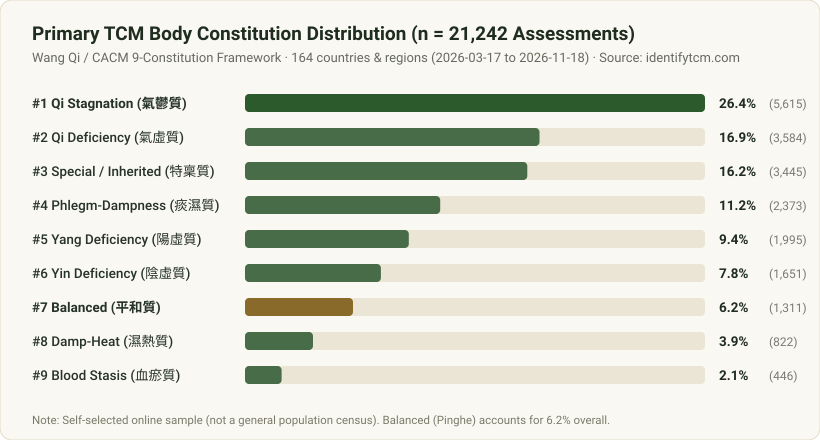
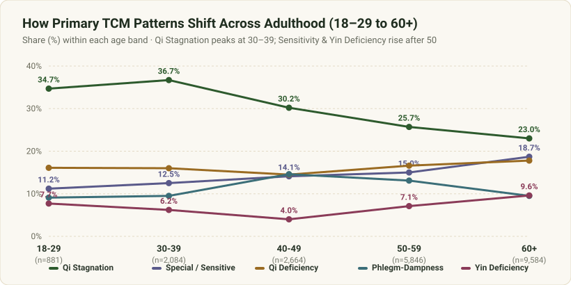
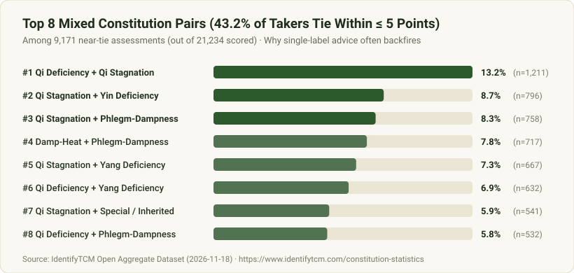

Open Research Dataset · CC BY 4.0 · Snapshot 2026-11-18
Global Online Distribution of the Nine TCM Body Constitutions: Aggregate Dataset From 21,242 Assessments
- Qi Stagnation (
qiyu, 26.4%) is the most common primary constitution overall and ranks #1 in every adult age band, peaking at 36.7% among ages 30–39. - Balanced (
pinghe) accounts for 6.2% overall (~1 in 16 assessments), dropping to just 2.4%–3.1% among adults under 40 in this self-selected online cohort. - Mixed patterns are the norm (43.2%): In 9,171 of 21,234 scored assessments, the top two biased patterns sit within ≤ 5 points (0–100 scale), led by Qi Deficiency + Qi Stagnation (13.2% of near-ties).
1. Download Raw Aggregate CSVs & Methodology Note
All files contain strictly aggregated, zero-PII statistical summaries licensed under CC BY 4.0 (free to reuse and cite with attribution to identifytcm.com/constitution-statistics):
2. Primary Distribution Across All Nine TCM Constitutions
Respondents completed the free 29-question TCM constitution assessment, which scores the nine TCM body constitutions on a 0–100 scale:

| Rank | Constitution (CACM) | Key | Count | Share | Mean (0–100) | Median |
|---|---|---|---|---|---|---|
| #1 | Qi Stagnation (氣鬱質) | qiyu |
5,615 | 26.4% | 48.2 | 48.0 |
| #2 | Qi Deficiency (氣虛質) | qixu |
3,584 | 16.9% | 43.7 | 44.0 |
| #3 | Special / Inherited (特稟質) | tebing |
3,445 | 16.2% | 34.8 | 31.0 |
| #4 | Phlegm-Dampness (痰濕質) | tanshi |
2,373 | 11.2% | 39.0 | 40.0 |
| #5 | Yang Deficiency (陽虛質) | yanxu |
1,995 | 9.4% | 39.9 | 39.0 |
| #6 | Yin Deficiency (陰虛質) | yinxu |
1,651 | 7.8% | 36.3 | 35.0 |
| #7 | Balanced (平和質) | pinghe |
1,311 | 6.2% | 36.8 | 36.0 |
| #8 | Damp-Heat (濕熱質) | shire |
822 | 3.9% | 33.5 | 31.0 |
| #9 | Blood Stasis (血瘀質) | xueyu |
446 | 2.1% | 28.2 | 27.0 |
3. Demographic Stratification: Age Bands & Gender
While Qi Stagnation leads both women (26.1%) and men (27.5%), secondary patterns diverge across life stages: Phlegm-Dampness rises in the 40–49 cohort (14.6%), while Yin Deficiency more than doubles from ages 40–49 (4.0%) to 60+ (9.6%) — a shift closely aligned with classical TCM views on menopause and Yin depletion as well as Liver-Blood signs such as vertical fingernail ridges.

| Age Band | Sample (n) | #1 Primary Pattern | #2 Primary Pattern | Balanced % | Yin Def. % | Near-Tie (≤5pt) |
|---|---|---|---|---|---|---|
| 18-29 | 881 | Qi Stagnation (35%) | Qi Deficiency (16%) | 2.4% | 7.7% | 41.6% |
| 30-39 | 2,084 | Qi Stagnation (37%) | Qi Deficiency (16%) | 3.1% | 6.2% | 42.6% |
| 40-49 | 2,664 | Qi Stagnation (30%) | Phlegm-Dampness (15%) | 3.3% | 4.0% | 43.8% |
| 50-59 | 5,846 | Qi Stagnation (26%) | Qi Deficiency (17%) | 7.4% | 7.1% | 44.1% |
| 60+ | 9,584 | Qi Stagnation (23%) | Special / Inherited (19%) | 7.3% | 9.6% | 42.7% |
4. Mixed Constitutions (43.2% Near-Tie Rate)
In clinical practice, pure single-pattern presentations are uncommon. Across 21,234 scored assessments, 43.2% (9,171) had their top two biased constitutions separated by 5 points or fewer. Understanding mixed TCM body types and sequencing rules helps explain why generic single-symptom tips — such as taking heavy tonics when internal dampness is present, or misreading trapped stress chill vs. why you feel cold all the time — frequently backfire.

| Rank | Unordered Constitution Pair (≤5 pt Tie) | Count | Share of Near-Ties | Share of All Scored |
|---|---|---|---|---|
| #1 | Qi Deficiency + Qi Stagnation | 1,211 | 13.2% | 5.7% |
| #2 | Qi Stagnation + Yin Deficiency | 796 | 8.7% | 3.7% |
| #3 | Qi Stagnation + Phlegm-Dampness | 758 | 8.3% | 3.6% |
| #4 | Damp-Heat + Phlegm-Dampness | 717 | 7.8% | 3.4% |
| #5 | Qi Stagnation + Yang Deficiency | 667 | 7.3% | 3.1% |
| #6 | Qi Deficiency + Yang Deficiency | 632 | 6.9% | 3.0% |
| #7 | Qi Stagnation + Special / Inherited | 541 | 5.9% | 2.5% |
| #8 | Qi Deficiency + Phlegm-Dampness | 532 | 5.8% | 2.5% |
| #9 | Qi Deficiency + Special / Inherited | 496 | 5.4% | 2.3% |
| #10 | Special / Inherited + Yang Deficiency | 330 | 3.6% | 1.6% |
5. Geographic Reach & Methodological Limitations
Geolocated completions span 164 countries and regions, led by English-speaking markets where TCM self-care education is growing rapidly. Notably, regional climate and allergen profiles appear in top-rank shifts: humid subtropics/tropics (Taiwan, Singapore) rank Phlegm-Dampness #1, while Australia ranks Special / Sensitive Constitution #1.
| Rank | Country / Region (n ≥ 50) | Assessments | Share of Geolocated | #1 Primary Pattern |
|---|---|---|---|---|
| #1 | United States | 8,075 | 45.3% | Qi Stagnation |
| #2 | United Kingdom | 1,242 | 7.0% | Qi Stagnation |
| #3 | Canada | 1,197 | 6.7% | Qi Stagnation |
| #4 | India | 843 | 4.7% | Qi Stagnation |
| #5 | Australia | 769 | 4.3% | Special / Inherited |
| #6 | Germany | 457 | 2.6% | Qi Stagnation |
| #7 | Taiwan | 350 | 2.0% | Phlegm-Dampness |
| #8 | The Netherlands | 331 | 1.9% | Qi Stagnation |
| #9 | Singapore | 287 | 1.6% | Phlegm-Dampness |
| #10 | France | 255 | 1.4% | Qi Stagnation |
- Self-selection bias (critical distinction vs. general population surveys): Community epidemiological studies in China using random or stratified sampling typically report 22%–35% Balanced (Pinghe) prevalence. By contrast, visitors arriving at an online wellness assessment (often via educational videos about fatigue, sleep, or cold hands and feet) are actively investigating existing sub-health signals — explaining the lower 6.2% Balanced rate and higher Qi Stagnation / Qi Deficiency shares.
- Unit of analysis: Primary tables report all 21,242 completed assessments (corresponding to 14,104 unique email respondents, as some users re-assess across seasons).
- Educational scope: TCM body constitution describes general wellness tendencies, not medical diagnoses. Nothing in this dataset or on IdentifyTCM diagnoses, treats, cures, or prevents any disease.